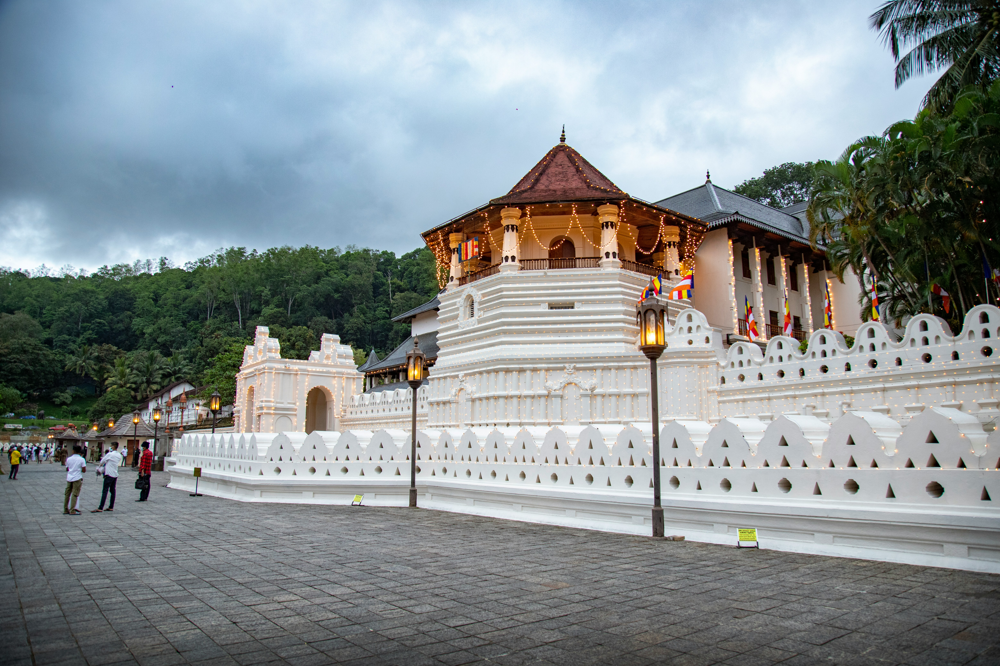
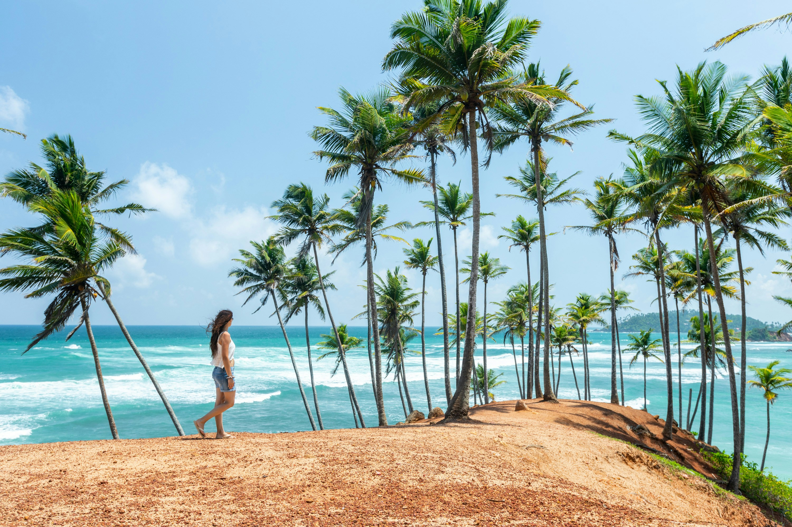
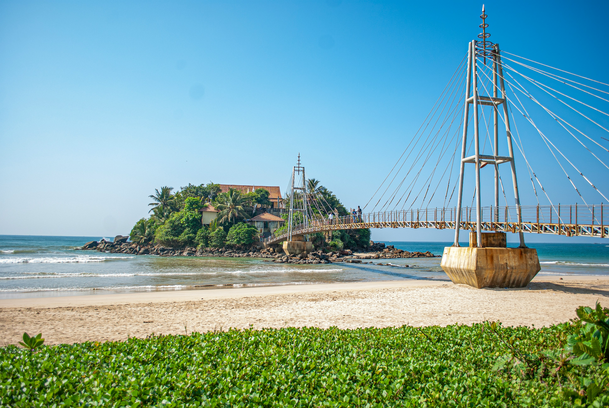
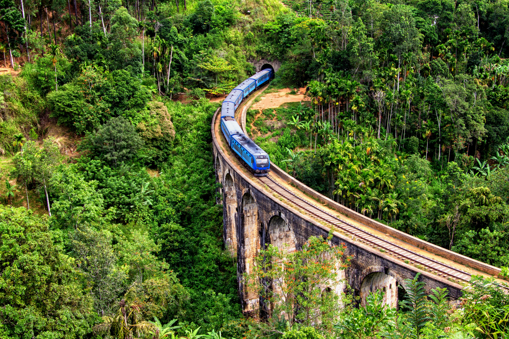
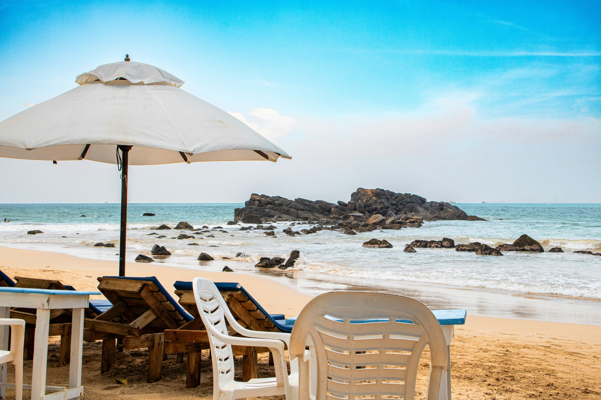
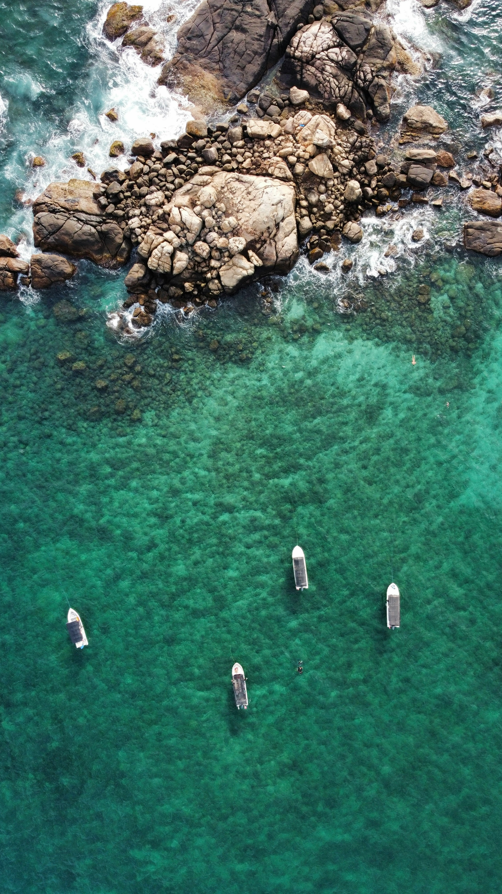

Sri Lanka is a teardrop-shaped island in the Indian Ocean where a remarkable variety of experiences sit within easy reach of each other. In a single trip you can climb the ancient rock fortress of Sigiriya at sunrise, ride a scenic train through the emerald tea country of Ella and Nuwara Eliya, and spot leopards and elephants in Yala and Udawalawe national parks. Golden beaches line the southern and eastern coasts, perfect for surfing, whale watching, or simply unwinding, while the cultural triangle and historic Galle Fort tell stories stretching back over two millennia. Add in fragrant spice-laden cuisine, warm hospitality, and short travel distances between destinations, and Sri Lanka delivers a rich, unforgettable journey for every kind of traveler.
The Pinnawala Elephant Orphanage is a popular tourist attraction in Sri Lanka, located in the Sabaragamuwa Province near Kegalle. Established in 1975, it was created to care for orphaned and abandoned elephants. Visitors can observe elephants being fed, watch them bathe in the nearby Maha Oya River, and learn about their daily care. Surrounded by lush greenery, Pinnawala offers a unique opportunity to see these magnificent animals up close while learning about elephant conservation and welfare.
Read moreKandy is a beautiful city located in the central highlands of Sri Lanka, surrounded by lush green hills and scenic landscapes. It is famous for the Temple of the Sacred Tooth Relic, one of the most sacred Buddhist sites in the world. Kandy is also known for its picturesque Kandy Lake, traditional Kandyan dance performances, and rich cultural heritage. With its pleasant atmosphere, historical landmarks, and natural beauty, Kandy is a popular destination for both local and foreign tourists.
Read more
Ella is a charming town nestled in the central highlands of Sri Lanka, famous for its breathtaking mountain views, lush tea plantations, and cool climate. It is a popular destination for nature lovers and adventure seekers, offering attractions such as Nine Arch Bridge, Ella Rock, and Little Adam’s Peak. Visitors can enjoy scenic train journeys, hiking trails, and beautiful waterfalls while experiencing the peaceful atmosphere of the countryside. With its stunning landscapes and relaxing environment, Ella is one of Sri Lanka’s most attractive tourist destinations.
Read moreMirissa is a beautiful coastal town on the southern coast of Sri Lanka, famous for its golden sandy beaches, turquoise waters, and stunning ocean views. It is a popular destination for swimming, surfing, snorkeling, and whale-watching excursions. Visitors can also explore the famous Coconut Tree Hill, enjoy fresh seafood at beachfront restaurants, and relax while watching breathtaking sunsets. With its tropical scenery and laid-back atmosphere, Mirissa is an ideal destination for a relaxing beach holiday.
Read moreParavi Duwa Temple is a beautiful Buddhist temple located on a small island near the coast of Matara, Sri Lanka. Connected to the mainland by a bridge, the temple is surrounded by the Indian Ocean and offers stunning views of the sea. It is known for its peaceful atmosphere, impressive Buddha statues, and scenic setting, making it a popular place for worship and sightseeing. Visitors can enjoy the gentle sea breeze, admire the coastal scenery, and experience a sense of tranquility while exploring this unique religious landmark.
Read more
Galle is a historic coastal city in the southern part of Sri Lanka, famous for its colonial architecture, beautiful beaches, and rich cultural heritage. Its most iconic attraction is the Galle Fort, a UNESCO World Heritage Site featuring charming streets, historic buildings, museums, and scenic ocean views. Visitors can explore the old lighthouse, walk along the fort walls, discover local shops and cafés, and enjoy breathtaking sunsets over the Indian Ocean. With its unique blend of history, culture, and coastal beauty, Galle is a must-visit destination in Sri Lanka.
Read moreDiscover the beauty of Sri Lanka with travel packages designed to suit every budget. Whether you're looking for an affordable getaway, a comfortable family holiday, or a premium travel experience, we offer flexible pricing to match your needs. Our packages can include accommodation, transportation, guided tours, and visits to popular destinations across the island. Explore Sri Lanka your way and enjoy an unforgettable journey at a price that works for you.
Make a reservationFeel free to contact us for more information about destinations, travel packages, and services.
Email us